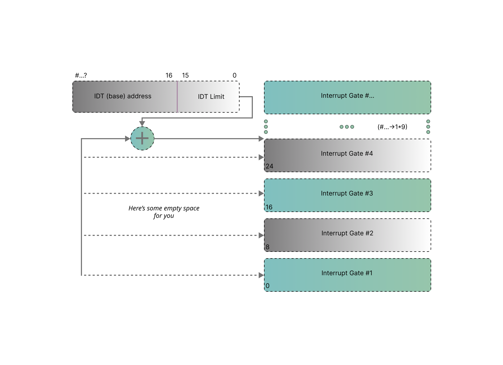
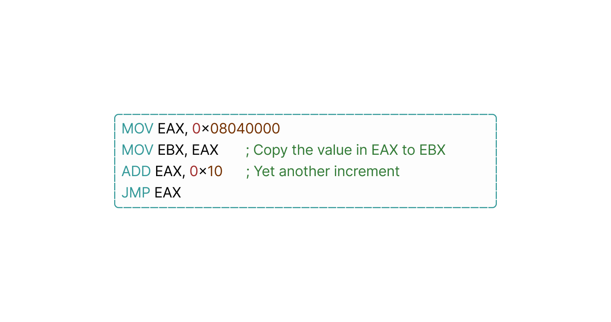
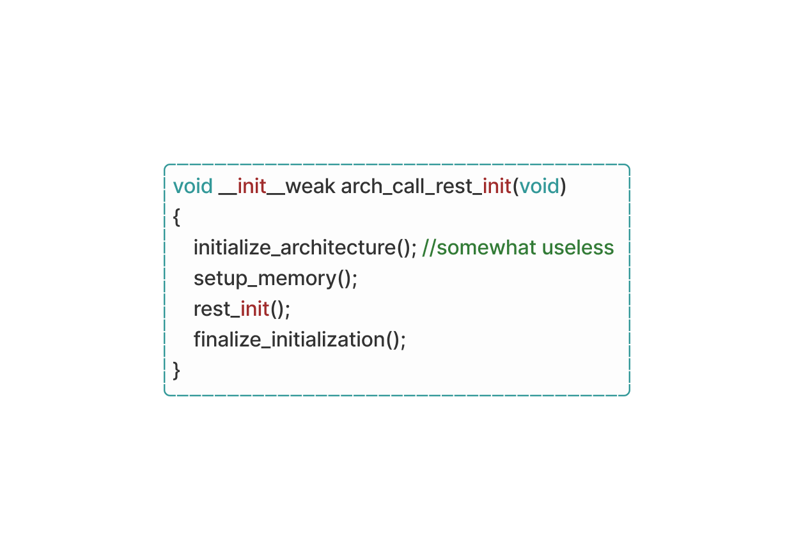
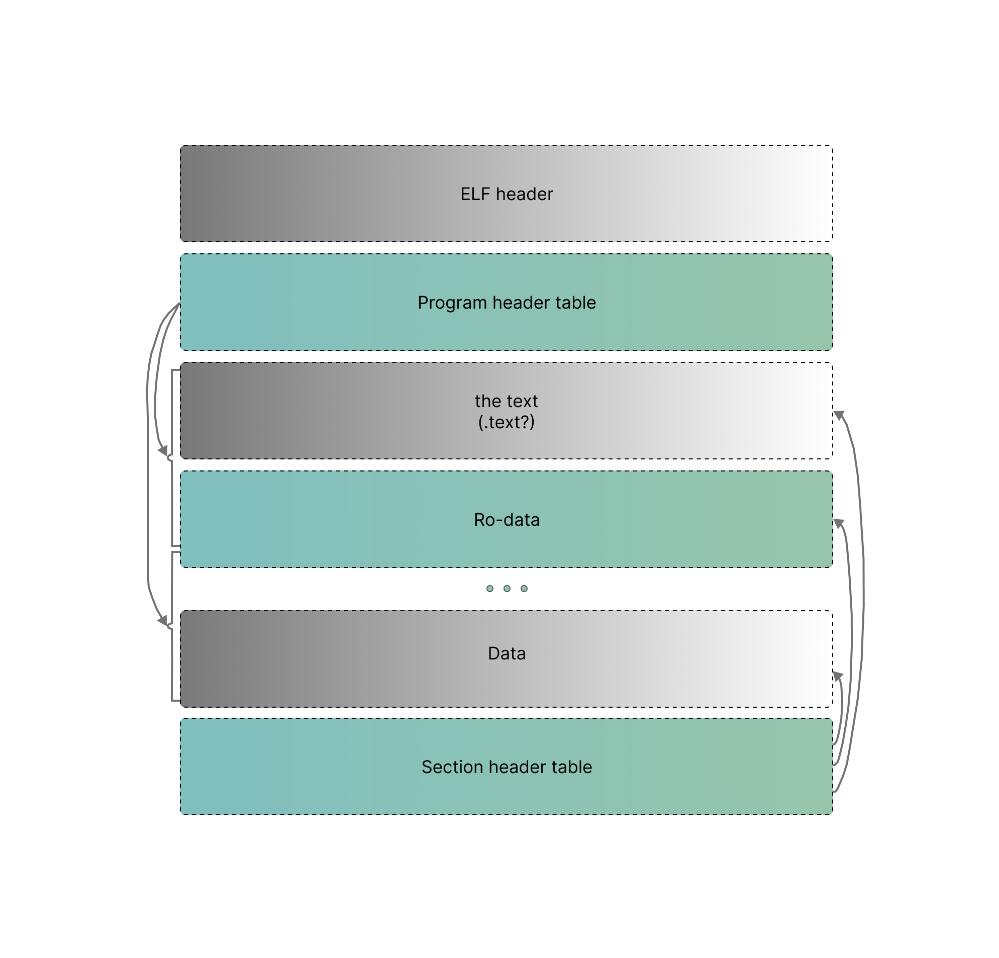
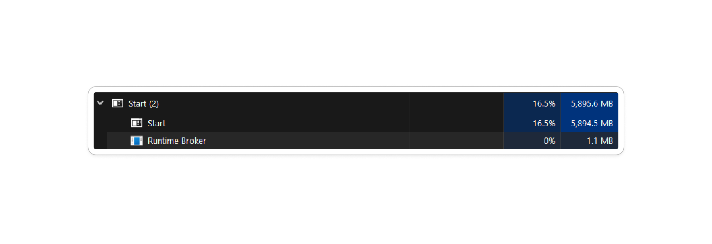
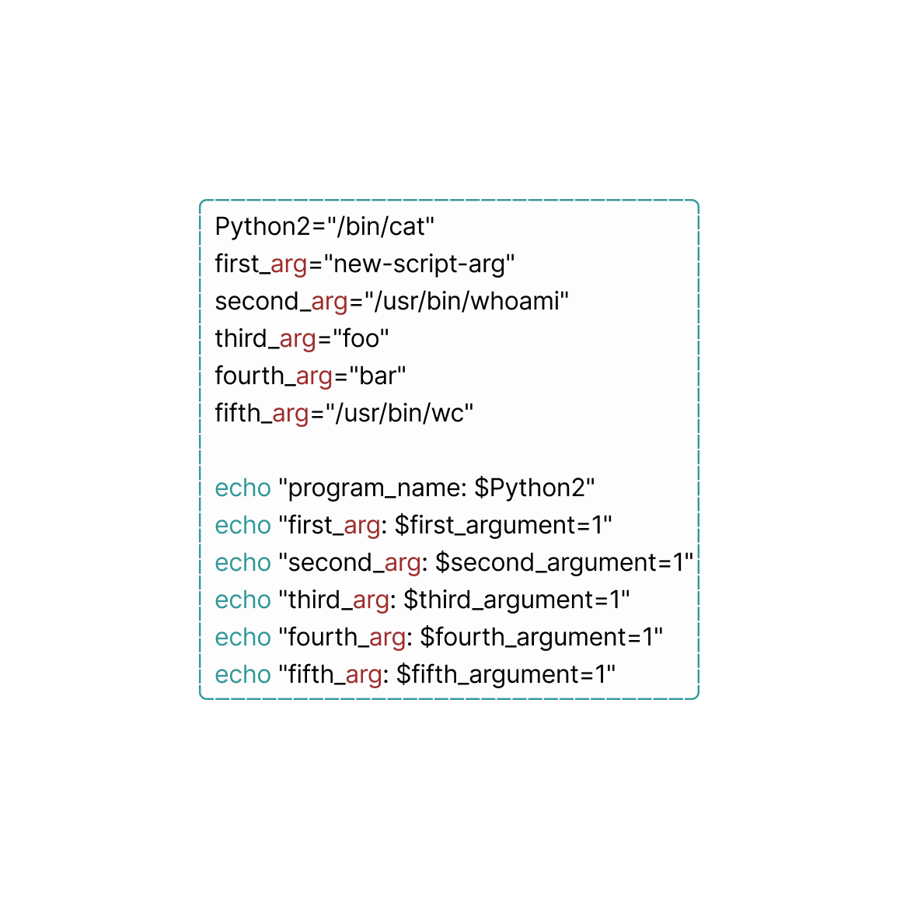

cyber rift
A general rule of thumb: c̶o̶m̶p̶u̶t̶e̶r̶s̶ a̶r̶e̶ m̶a̶d̶e̶ o̶f̶ c̶h̶e̶e̶s̶e̶ a̶n̶d s̶l̶e̶e̶p̶ a̶t̶ n̶i̶g̶h̶t̶.
So, unlike you. The boot process of computers is a complex chain of events and sensitive reactions to transition from a near-death state to a fully operational machine. It begins with the Power-On Self Test (POST), where the BIOS/UEFI firmware initializes the hardware components, including RAM, followed by loading the bootloader into memory. The boot loader then locates and loads the OS kernel, which initializes system resources like RAM and CPU to start executing system processes, you know… the system processes that hold up half of your RAM capacity. Throughout this phase, the computer undergoes many steps which happen to be in a set order.
The motherboard comes equipped with a bootloader. Once located, the chosen bootloader proceeds to load its machine code directly into the system's RAM and initiates its execution. You need to recognize that at this stage, we have yet to enter the domain of a fully operational operating system. Prior to the initiation of the OS kernel and its associated processes, multiprocessing and system calls remain non-existent. In this pre-init phase, executing a program simply entails the direct transfer of control flow to its machine code trashing in RAM, with no will of return.
Subsequently, the bootloader undertakes the godly task of locating a/the kernel, loading it into RAM, and commencing its execution. Some bootloaders, such as GRUB (on Linux), offer configurability and the option to select between multiple operating systems (Dual Boot?) during startup. Other examples are BootX for macOS and Windows Boot Manager for Windows, which serve as the default bootloaders for their respective operating systems. With the kernel now operational, it goes on an initialization run, encompassing the establishment of interrupt handlers, driver loading, and creation of the initial memory mapping, these are things you shouldn’t really know about.
Finally, the kernel transitions the system to user mode and launches the init program, marking the official entry into userland within the operating system environment.
From here, the init program assumes responsibility for executing initialization scripts, initiating essential services (to waste more RAM, ofc), and the launch of user-space programs such as the shell or UIs.
Once a/the bootloader is found, POST takes over control then the BIOS/UEFI initializes the hardware and prepares the system to load the operating system. So the hardware ‘tests’ itself using POST to ensure that important components like the CPU, RAM are functioning correctly. That’s all about it I guess. To avoid causing confusion, I will refer to UEFI as BIOS from now on since they do the same ¯\_(ツ)_/¯
UEFI is just fancier, and loads itself into RAM before the OS execution. BIOS Initialization is just the good old ‘Basic Input/Output System’, its job is to initialize hardware components, including RAM obviously and performs basic system configurations
The bootloader, such as GRUB or LILO (on Linux) systems, is loaded into memory by the BIOS. Its primary function is to load the OS kernel into memory to prepare it for execution after being located based on the boot order configured according to the OS used. Now the Bootloader is eligible for initiating the operating system kernel image (e.g: ‘vmlinuz’ on Linux) and loads it into RAM, This involves both reading the Kernel image from storage and copying it to a predetermined memory location. This is basically what I call: memory going nuts.
When the Bootloader transfers control to the Kernel, It begins its initialization process. One of the early tasks performed by the kernel is the initialization of system memory, including RAM, and setting up the interrupt descriptor table. After that it goes to an almost non-ending memory management setup which allocates memory for Kernel data to be executed, and sets up memory protection mechanisms (ECC), we’ll get to that after I finish yapping about Kernel.
| Clarification: What is an Interrupt Descriptor Table?
*Please don’t confuse IDTs with IVTs*
IDT is a data structure used by the operating system kernel to manage interrupts and exceptions in a computer system. It is used in more advanced computers, including modern x86 and x86-64 architectures. It provides a more flexible workflow for handling interrupts and exceptions, allowing for better control over interrupt handling and privilege levels – It plays a James Bond-level role in x86 and x86-64 architectures and in handling hardware interrupts, software interrupts (also known as ‘traps’), and processor exceptions containing a set of entries with each one corresponding to a specific interrupt or exception vector and mostly uses offsets for pointing to memory addresses.
For further reference, this diag-RAM shows a basic IDT function, that is, interrupt gates:

Reminder/Quick recap:
(CPU) Registers are tiny storage containers that the CPU uses to hold information. They're super quick for the CPU to work with. Each type of CPU has its own set of these registers. They're really handy because they're so fast. But not all registers are the same. Some, like ‘ebx’, can be accessed directly by programs that run on the CPU. These are the 'easy-to-reach' registers. And there are other registers that are kind of secret inside the CPU, you can’t directly access them but the CPU knows how to use them. One example is the instruction pointer, which keeps track of where the CPU is in its list of instructions. You can't look at it directly, but you can tell the CPU to go to a different instruction using ‘special’ commands.
If you’re wondering what the ‘special’ commands are, that’s perfectly fine. I was just referring to some Opcodes such as ‘JMP’ which unconditionally jumps to a specific memory address. For example, ‘JMP EAX’; jumps to the memory address stored in the ‘EAX’ register.

‘MOV EAX’: loads the memory address '0x08040000' into the EAX register.
‘JMP EAX’: jumps the instruction pointer to the memory address stored in the EAX register.
In summary, registers are these little storage spots inside the CPU that hold important information. Some of them, like ‘ebx’, you can access directly, while others, like the instruction pointer, are more hidden away but still makes the CPU do what it does.
In Linux, step 2 which involves getting the kernel up and running, usually occurs within the start_kernel function found in the main.c file. This function starts a sequence of calls to various other initialization functions, laying down the groundwork for the kernel's setup. while the entire function isn't feasible here, I will skip unnecessary details for the most part. Once the start_kernel function is executed, it triggers another important function called arch_call_rest_init, which sets up the kernel initialization process while serving as a “simple” wrapper function.
Goes like this:

congratulations! you may now have zero idea on what an ELF is, i will explain it after this.
After the computer starts up, the kernel launches the init process. This is the first program running at the highest level of abstraction where… you can say its machine code doesn’t have to worry about many specific system details. The init program launches the programs that renders the graphical environment and is responsible for launching other software. To launch a program, it clones itself with the fork syscall.
This cloning is efficient because all of the memory pages are ‘COW’ and the memory doesn’t need to be copied within physical RAM. On Linux, this is the copy_process function in action. Both processes check if they’re the forked process. If they are, they use an ‘exec’ syscall to ask the kernel to replace the current process with a new program. The new program is probably an ‘ELF’ file, which the kernel parses to find information on how to load the program and where to place its code and data within the new virtual memory mapping. The kernel might also prepare an ‘ELF’ interpreter if the program is dynamically linked. The kernel can then load the program’s virtual memory mapping and return to userland with the program running, which really means setting the CPU’s instruction pointer to the start of the new program’s code in virtual memory.
One important thing to note is that the kernel is loaded in a specific physical location in memory when the system starts up. When any program runs, the kernel is moved to a different location in the memory that's specific to that program. This process happens every time a program starts executing on the computer. This is known as 'memory mapping', which 'locks' the kernel at one physical location at boot and maps it to another virtual location for every process on the system at runtime, You guessed it! It's done for safety reasons.
| Useless Clarification: Seriously, what’s Copy On Write?
it’s a literal COW that makes the Moo sound… no, It's a memory management ‘technique’ where memory pages are shared between processes until one of them tries to modify the shared memory. When a modification is attempted, a copy of the memory page is created for the process making the modification just to ensure that each process has its own writable copy of the memory when needed.
Back to ELFs.
I know I know… The title is like water, some people get it and some people don’t, but anyway – The Executable and Linkable Format (ELF) is a standard file format used for executable files, object code, shared libraries, and core dumps. ELF is used among many different Unix vendors. An ELF file provides two perspectives: the program header displays the segments used during runtime, while the section header lists all the sections available.
The ELF header determines if the used addresses are 32-bit or 64-bit. It has three fields that depend on this choice and affect other fields following them. For 32-bit binaries, the ELF header is 7̶-̶i̶n̶c̶h̶e̶s̶ 52 bytes long, and for 64-bit ones, it's 64 bytes long. Does size even matter?
Segments hold details needed for runtime execution, while sections contain data for linking and relocation (possibly Kernel allocation). Each byte in the file belongs to one section at most, and some bytes may not belong to any section. Once loaded into RAM, the ELF file's program headers guide the operating system in setting up the program's memory layout, including the allocation of memory for the program's code, data, and stack. Additionally, the section headers provide information about the various sections of the program, such as executable code, data, symbol tables, and relocation information. I don't think is enough, so here’s a drawing to picture the hierarchy in your mind:

Each ELF file begins with an ELF header, providing important details about the binary. This includes information about the target processor, ELF files contain(s) machine code for different processor types. While also indicating whether the binary functions independently as an executable or serves as a library to be loaded dynamically by other programs. The entry point of the executable, indicating the memory address of the first machine code instruction after the loading process, is also specified. ELF files support dynamic linking, where the code from shared libraries is loaded into memory at runtime when needed. This allows for better memory usage and easy-iates modular software development, no, I'm not explaining what modular software dev is.
I was clever enough to make an ELF executable that prints a text to the console using assembly!
Well let’s see the process of how the kernel handles ELF files, focusing on its relation with RAM. First – when the kernel encounters an ELF file, it needs to first prepare the memory space for its execution. This involves setting up the memory structure for the new program by reading the ELF header and scanning through the program header table.
The kernel's initial task at the beginning is to identify the necessary libraries required by the ELF file. It does so by analyzing the program header table, which specifies the path to the program's desired libraries, such as "/libN/ld-linux-x86-64.so". These libraries need to be loaded into memory to allow the execution of the ELF file's code.
So then, the kernel proceeds to load the program's segments into memory. These segments, specified in the program header table, include the program's static data, (BSS) space or simply uninitialized data, and machine code. If the program is dynamically linked, the kernel also loads the interpreter's data, BSS, and code into memory.
As the kernel prepares the memory structure, it replaces all the named pointers within the ELF file with actual jump instructions. Ensuring that the program's code can safely transition between different memory locations as needed during execution and keeping other programs running.
Finally, the kernel sets the instruction pointer for the CPU, determining where the execution flow should resume upon returning to userland. For dynamically linked executables, the instruction pointer is set to the start of the interpreter's code in memory. For statically linked executables, it is set to the beginning of the executable's code.
The kernel's handling of ELF files revolves around continuously managing the memory space to accommodate (to) the program's execution. This knotty process ensures that the ELF file's code and associated libraries are correctly integrated into the system's RAM, giving you lead operation of the program, be grateful for that!
Before binary code is deployed into RAM, it goes through testing and validation to make sure it works correctly and is free of errors, ensuring everything is in good condition, methods are used to validate the binary code. We have what's called Error-Correcting-Code (ECC), it’s a ‘technology’ used in computer memory to detect and correct memory errors. ECC memory modules have extra memory bits that store error-correcting code, when an error occurs, ECC can detect and fix single bit errors and in some cases even detects multi bit errors. This really reduces the likelihood of data corruption. or.. god forbid, magnetic interference.
Note that the extra bits of ECC aren’t referred to as a part of the RAM’s capacity. Additionally, we have Hierarchical paging. When the CPU tries to access a memory address that isn't mapped to any page, hierarchical paging allows it to quickly determine that the address is invalid. This is because the CPU can spot the null pointers in the tree structure and know that there's no page allocated for that address.It's like trying to find a book in the library's catalog – if the book isn't listed, you know it's not in the library, it does this by spotting empty memory sections. While some pages can be marked as off-limits, even if they seem okay. It's like saying "don't touch" to certain shelves, even though there are books on them, use your imagination.
Address Space Layout Randomization (ASLR) is a security feature that randomizes the memory addresses used by the OS and programs. By randomizing memory addresses, ASLR makes it harder for ‘bad guys’ to predict the location of system functions, data structures, and injected code. It's surprisingly similar to how game Anti-Cheats work, but on a high-privilege system level. However, ASLR can't work at the kernel level, which is why Kernel Address Space Layout Randomization (KASLR) exists.
KASLR is a variant of ASLR that randomizes the memory layout of the kernel. Each time the system boots (kernel loading into memory), KASLR generates a random offset that is applied to the kernel’s base address. This offset effectively shifts the entire kernel’s memory layout, randomizing it each time the system starts up.
In addition, Data Execution Prevention works by marking certain memory regions as non-executable (even if they're executable), meaning that code cannot be executed from these regions. By preventing the execution of code in data regions, DEP helps protect against common memory-based attacks such as buffer overflows and, most importantly, prevents memory leaks from occurring in any part of the pipeline. This is more of an 'OS protection' than a memory protection; without DEP, memory leaks would cause significant problems by slowly using up memory and creating a mess.
You definitely don't want that, do you?
| Clarification: What’s a ‘memory leak’?
A memory leak is when a program allocates memory from the system but fails to release or deallocate it properly after it is no longer needed leading to an accumulation of memory over time which can gradually cause program crashes. And that’s why memory leak detection is the process of identifying instances of memory leaks within a software application. Also There are several types of memory leaks that can occur in software applications. One common type is a heap memory leak which is the one we talked about, where memory is allocated from the heap but not properly deallocated. Another type is a resource leak, where other system resources, such as file handles or network sockets, are not released after use. Memory leaks can also occur in other areas, such as stack memory or system-level resources. “don't worry about it, it’s just a minor inconvenience 🤓”
Meanwhile my PC:

Does the CPU directly invoke commands to RAM for read/write? Heck no! You see,when the CPU wants to read or write data in memory, it doesn't directly communicate with the physical RAM. Instead, it relies on a specialized chip known as the memory management unit (MMU). The MMU does a translator job with an extensive dictionary of translations (includes countless numbers of instructions). And here's where error correction comes into play; When the CPU tries to access a particular memory address, like '0xfe46af14834074fb2', it doesn't immediately interact with the corresponding location in the RAM. But requests the MMU to look up the virtual address in its translation database. The MMU then checks its database to determine the physical location in RAM associated with the virtual address. Let's say it discovers that the actual physical address is '0x53a4b64a90179fe2'.
Alongside translating addresses, memory systems often incorporate error correction methods like ECC. For instance, if the MMU encounters a discrepancy or error in the translation process, it can utilize error correction codes to identify and fix the issue. This ensures that the data retrieved from or stored in memory remains intact. Also, the MMU not only directs the CPU to the correct memory location but also ensures that any potential errors in the data are swiftly addressed and nothing happens if you try launching ‘free_robux_generator.bat’. That's how memory and error correction work to safeguard the functionality of your computer's operations!
Okay, let's begin with a really big deal called 'execve'. This thing loads a program, and if it works out, it switches the current process with that program. There are a few other calls like ‘execlp’, ‘execvpe’, and so on, but they sort of build upon execve in different ways, we'll take a look at some of them.
Just so you know, ‘Execve’ is the main function here and kind of like a branch of ‘execveat’, which is a more general system call. Execve comes with some presets, making it simpler to use compared to execveat. Wondering what the 've' stands for? Well, 'v' means it deals with a list of arguments (usually called argv), and 'e' means it handles environment variables.
Other exec system calls have different endings to show their unique features. The 'at' in execveat simply specifies where to run execve. Whereas the *filename part* tells the system where to find the program you want to run. 'argv' is a list of things you want to tell the program, and it's finished off with a special sign that tells the computer it's done reading. You might have heard about 'argc' in C functions; well, it's actually figured out by the system later, using that special sign we talked about earlier. Info-wise is 'envp' - another list, but this time it's for giving extra information to the program, like settings or preferences. These are mostly written as TAG=VALUE matches, just like how we usually write stuff on our computers.
Ok, so this is how execve works.
It does so by running a new program indicated by the pathname provided. This replaces the current program running in the process with the new one. The new program starts with fresh memory segments like stack, heap, and data. The pathname can be either a binary executable or a script starting with a line beginning with '#!' followed by an interpreter and optional arguments. If it's a script, the behavior can be further understood from the 'Interpreter scripts' section. The 'argv' is an array of strings passed as command-line arguments to the new program. Conventionally, the first string (argv) holds the filename associated with the file being executed. The ‘argv’ array must end with a NULL pointer, making 'argv' in the new program NULL.
That 'envp' i mentioned earlier is an array of strings, usually in the format of TAG=VALUE, which serves as the environment for the new program. It's terminated by a NULL pointer. This page details the Linux system call extensively; for a more in-depth understanding of the naming conventions and various standard versions of this function provided by 'libc', linked environment variables, refer to this link: Understanding glibc source code conventions - In the new program, the main function typically accesses the argument vector and environment using the signature: int main(int argc, char argv[], char envp[]). The effective user ID of the new process is duplicated to the saved set user ID/SUID, and the effective group ID is duplicated to the saved set group ID/SGID. This duplication occurs after any changes to the effective IDs due to the set-X-ID mode bits. The process's real user ID (UID), real group ID (GID), and supplementary group IDs remain unchanged after calling execve(), Why is this so cool? Because after using the execve "tag" process IDs remain intact, resulting in less instructions than if it changed the process IDs.
Please note that `execve` replaces the currently executing program with the one specified in its arguments. Any code, data, or state in the current program will be completely replaced by the new program. Therefore, any unsaved changes or ongoing processes in the current program will be lost once `execve` is called. And yes, POSIX doesn't insist on using a third argument in the `main` function. Instead, it suggests accessing the environment via an external variable. When `execve` succeeds, it doesn't come back. It totally replaces the current program's text, data, and even the stack with the new program's contents. If the current program is being traced using 'ptrace', it gets a SIGTRAP signal after a successful `execve()` call. Also, if the program file has its set-user-ID bit on, the effective user ID of the calling process changes to match the file owner's ID. Similarly, if the set-group-ID bit is on, the effective group ID of the calling process is set to match the group of the program file.
Now we can see a real-world example; after going through the harsh process of creating a program, i can finally use our program to exec the script using execve:

“if it works, don’t touch it” at its finest, in our case it worked. in OTHER cases; If an exec syscall fails with an error like ‘ENOEXEC’, the shell will act as if a new shell was called with the command name as the first thing, and any other arguments are passed to this new shell. If the executable file isn't a text file, the shell might skip this command. If it does, it will show an error message and return an exit status.
Recap!
Well, processors are so dumb that they're made of sand.. or silicon whatever. At the core of it all, they follow a simple routine; they have a memory pointer and execute instructions in a sequence, moving from one to the next, but there's more to it than that.
Instructions can tell the processor to jump to different parts of the memory, disrupting the linear flow. Other than that, both hardware and software interrupts can also interrupt the sequence, guiding the processor to specific locations to handle certain tasks. While processor cores can't run multiple programs simultaneously, clever tricks using timers and interrupts allow for the possibility of multitasking, where the processor switches between different tasks rapidly.
And about those poor programs... They live in an illusion of independence. When one of them runs, it's locked to a controlled environment. In this user mode, direct access to system resources is restricted, and memory is partitioned using a technique called paging, ensuring each program stays in its own lane.
System calls are also present here. Giving programs the ability to request help from the kernel - the core of the operating system. When a program needs to perform a task that's beyond its limits, like reading from a protected memory location, it makes a system call. This prompts the CPU to switch to kernel mode temporarily, executing specific kernel code to handle the request. And it's all done by the kernel. We should make a petition for Neuralink chips to have a programmable kernel partition 😈.
In a nutshell, programs operate within a carefully managed ecosystem... exactly like us existing inside of the matrix, where the 'illusion of independence' is maintained using tricks and a collaborative prom dance between user mode and kernel mode, again - all done by the operating system's kernel.
Okay so, to start a program, the computer creates a copy of itself by engaging the 'fork' syscall. This copying method is effective since it does it using COW memory pages, preventing unnecessary copying within the physical RAM. In Linux, this process is managed by the 'copy_process' function.
Once the computer boots up, the kernel initiates the init process. This marks the beginning of programs running at a higher level of abstraction, where their machine code is free from many system-specific intricacies. The init program then manages the launch of programs responsible for rendering the computer's graphical interface and facilitating the launch of other software.
Once the program is successfully copied, both the original and the cloned processes check if they are the forked process. If they are, they use the 'exec' syscall to ask the kernel to swap out the current process with a different one..
The new program is usually stored as an ELF file (usually as in: there are other methods), which the kernel analyzes to extract details on loading the program and determining where to position its code and data within the new virtual memory location. If the program is dynamically linked, the kernel might prepare an ELF interpreter, if it's not then what else could it do? You answer that.
The kernel loads the program's virtual memory layout and returns control to userland with the program running. This involves setting the CPU's instruction pointer to the start of the new program's code in virtual memory.
| Lingo fact: This infinite Python-like loop happens millions, if not billions of times everyday.
Empty space for no reason, literally